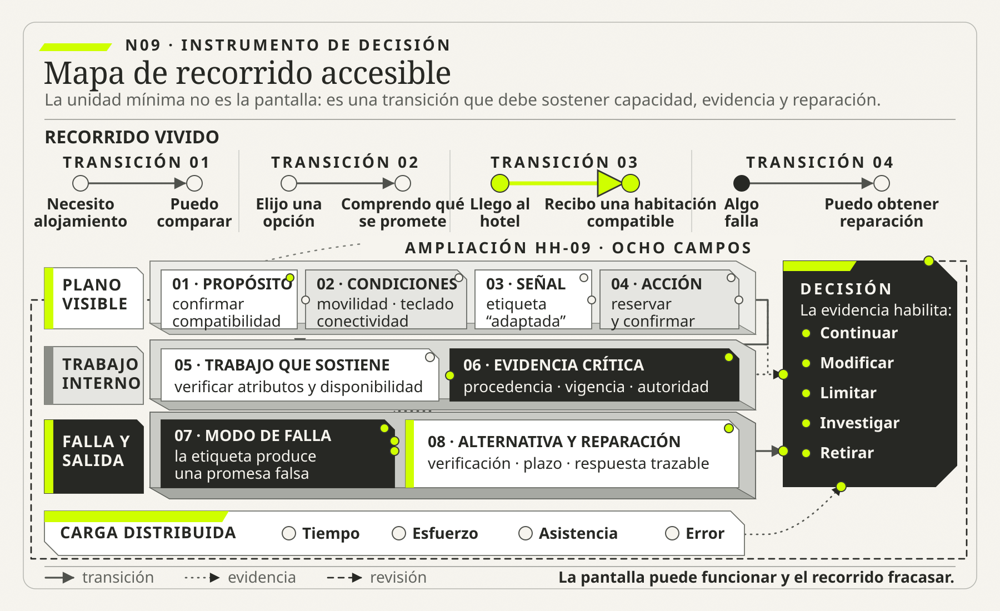

01
01Sasha Costanza-Chock
OBRA PRINCIPAL UTILIZADADesign Justice: Community-Led Practices to Build the Worlds We NeedMIT Press, 2020

Una solución es utilizable y adoptable cuando personas diversas pueden comprender, decidir, actuar, corregir y obtener resultados bajo condiciones…
Experiencia, accesibilidad y adopción no son decoración
Ruta de lectura: problema, distinciones, decisiones, prueba, transferencia y preparación para N10.

Nota. SIN NUM. identifica los aparatos de orientación y referencia que no integran la secuencia argumental.
Seis voces principales para ampliar, contrastar y discutir esta lectura.
01MIT Press, 2020
 02
02Cambridge University Press, 2007 · reedición del argumento formulado en 1987
 03
03NIST AI 600-1, 2024 · equipo coautor
 04
04NIST AI 600-1, 2024 · equipo coautor
 05
05NIST AI 600-1, 2024 · equipo coautor
 06
06NIST AI 600-1, 2024 · equipo coautor
N09 no resume estas fuentes ni las convierte en una receta. Las pone en tensión para construir juicio profesional.
¿Qué cambia cuando experiencia, accesibilidad y adopción se tratan como propiedades del sistema y no como terminación de una interfaz?

Una experiencia sin barreras aparentes puede seguir produciendo exclusión en el resultado.
Un edificio público inaugura una puerta automática. El viernes anterior se había realizado la prueba final: una persona caminó por el centro del acceso, el sensor la detectó, las hojas se abrieron y volvieron a cerrarse. El acta registró que el mecanismo funcionaba. El lunes, una cinta adhesiva discreta sobre el vidrio anunciaba la modernización y dos empleados recibían a las autoridades. La puerta era silenciosa, rápida y elegante. Parecía el tipo de solución que ya no necesitaba explicación.
La primera señal de que algo no estaba resuelto apareció sin dramatismo. Una niña se adelantó a su familia, se detuvo frente al vidrio y esperó. El sensor, calibrado para otra altura y otro patrón de movimiento, no respondió. Su padre levantó un brazo; la puerta se abrió. Nadie presentó un reclamo. Para el tablero del proyecto, el acceso había operado correctamente. Para la niña, la puerta no era automática: requería que otra persona completara la interacción.
Una hora después llegó una mujer que caminaba con bastón. El sensor la reconoció, pero las hojas comenzaron a cerrarse antes de que terminara de cruzar. Retrocedió, volvió a intentarlo y recibió ayuda del guardia. Tampoco hubo una falla técnica en el sentido estrecho: el motor respondió, la fotocélula emitió la señal prevista y el ciclo se completó. Sin embargo, la duración configurada había convertido una capacidad corporal supuesta en una condición invisible de acceso.
Por la tarde, un corte eléctrico activó el modo manual. El cartel indicaba “empuje”, pero la resistencia de la hoja exigía una fuerza considerable. Quien había diseñado el procedimiento de contingencia había pensado en la pérdida de energía, no en la diversidad de personas que necesitarían atravesar la puerta durante esa contingencia. La alternativa existía en el manual y, aun así, no era una alternativa efectiva para todos.
Al día siguiente, el equipo discutió el incidente. Mantenimiento sostuvo que el dispositivo cumplía especificaciones. Seguridad recordó que el cierre rápido reducía el riesgo de ingreso no autorizado. Arquitectura señaló que el ancho libre era reglamentario. Atención al público describió las ayudas que el guardia había prestado. Cada afirmación podía ser verdadera y, sin embargo, el acceso completo seguía siendo frágil. El problema no estaba contenido en una pieza defectuosa: estaba distribuido entre calibración, tiempos, cuerpos, reglas, señalización, contingencia, autoridad y asistencia.
La historia cambia cuando la pregunta “¿funciona la puerta?” se reemplaza por otra: “¿personas diversas pueden ingresar, comprender qué ocurre, actuar sin dependencia indebida y recuperarse si algo falla?”. La primera admite una demostración en condiciones ideales. La segunda exige definir poblaciones, recorridos, variaciones, responsabilidades y evidencia. También obliga a observar una desigualdad frecuente: cuando el diseño presupone un usuario estándar, quienes quedan fuera pagan con tiempo, exposición, esfuerzo o necesidad de pedir ayuda.
La puerta no posee una propiedad simple llamada “accesibilidad”. Tampoco posee por sí sola una “buena experiencia” ni puede ser “adoptada” independientemente del sistema de acceso. Esas propiedades emergen de la relación entre artefacto, personas, entorno, servicio y gobierno. Cumplir una prueba aislada no garantiza que el recorrido completo permita entrar, usar el servicio y reparar una falla. Del mismo modo, una pantalla puede satisfacer una especificación y conducir a una promesa imposible; un canal digital puede registrar mucha actividad porque se eliminó toda alternativa; una automatización puede reducir segundos y aumentar exclusión.
N09 traslada esta historia a los sistemas de información. Experiencia, accesibilidad y adopción no pertenecen sólo a la interfaz ni constituyen una etapa cosmética del proyecto. Son propiedades del servicio completo y distribuyen capacidades y cargas de manera desigual. Diseñarlas requiere pasar de la persona promedio a condiciones reales, de la pantalla al recorrido, del cumplimiento nominal al resultado y del lanzamiento a la operación sostenida.
Una solución es utilizable y adoptable cuando personas diversas pueden comprender, decidir, actuar, corregir y obtener resultados bajo condiciones reales. La experiencia atraviesa la interacción visible y el trabajo interno; la accesibilidad requiere atributos verificables y alternativas; la adopción emerge del diseño del trabajo, la confianza y los incentivos. Una interfaz fluida no justifica transferir carga, ocultar riesgo o excluir excepciones.
Esta tesis no convierte toda diferencia de experiencia en un problema técnico ni promete una solución idéntica para cada persona. Propone una responsabilidad profesional más precisa: declarar qué capacidades deben quedar disponibles, para quiénes y en qué condiciones; identificar dónde se interrumpe el recorrido; diseñar alternativas equivalentes; y conservar evidencia que permita revisar decisiones. El criterio de calidad no es la ausencia de fricción ni la cantidad de usuarios activos. Es la posibilidad efectiva de alcanzar un resultado valioso sin cargas, riesgos o exclusiones desproporcionadas.

N08 mostró que el trabajo real nunca coincide por completo con el procedimiento imaginado. Las personas adaptan, coordinan, reparan y crean atajos para sostener el servicio. N09 agrega la perspectiva de quien atraviesa ese sistema: huésped, empleado, proveedor o ciudadano. Una adaptación que preserva el trabajo interno puede trasladar una carga inaceptable hacia quien usa el servicio. A la inversa, una interfaz que simplifica la experiencia visible puede esconder trabajo manual, deuda operativa o decisiones sin autoridad.
Por eso, experiencia y trabajo real no se estudian en documentos separados. En Hotel Horizonte, permitir que el huésped elija una hora de llegada parece una mejora de experiencia. Pero si la promesa no se conecta con ocupación, limpieza, mantenimiento y autoridad para asignar, el diseño sólo vuelve más clara una expectativa que el sistema no sabe cumplir. La experiencia empeora precisamente porque la interfaz comunica con eficacia.
La continuidad conceptual es directa. N08 dejó tramos abiertos, verificaciones repetidas, ayudas, canales alternativos y excepciones localizadas en episodios reales. N09 pregunta cómo ese trabajo produce o impide una capacidad para alguien. El recorrido vivido permite evaluar el sistema no sólo por la actividad ejecutada, sino por la posibilidad de comprender el estado, actuar, recibir aquello que se prometió y encontrar reparación cuando la secuencia falla.
N09 no reconstruye otra vez el procedimiento ni vuelve a explicar cómo observar el trabajo. Toma HH-08 como entrada y construye HH-09, un mapa de recorrido accesible que conecta propósito, condiciones, señal visible, acción requerida, trabajo de soporte, evidencia, modo de falla, alternativa y reparación. N10 recibirá ese mapa y decidirá cómo formular el problema y el resultado buscado. La formulación canónica de ese resultado no se anticipa aquí.
Ejemplo simple: el turno bancario. Una aplicación entrega un número de turno y lo marca como “atendido” cuando un operador lo abre. Para la métrica interna, el caso terminó. Para la persona, la gestión puede seguir sin resolverse porque falta una autorización. El evento técnico y el resultado del servicio no son equivalentes.

Ingeniería de Software aporta usabilidad, requisitos no funcionales y pruebas de aceptación. ISO 9241-11:2018 obliga a definir la usabilidad con relación a personas, objetivos y contexto de uso; ISO 9241-210:2019 extiende el diseño centrado en las personas a todo el ciclo de vida de sistemas interactivos. N09 conserva esos instrumentos y cambia la unidad: de pantalla a recorrido, de usuario promedio a poblaciones concretas, de conformidad a capacidad efectiva. Una interfaz puede cumplir criterios y conducir a un canal inaccesible cuando aparece una excepción.
El nuevo check-in digital de Hotel Horizonte permite completar datos, validar documento y elegir horario en cuatro pantallas claras. Las pruebas de usabilidad son buenas. Sin embargo, el huésped llega y la habitación no está lista; la categoría prometida difiere; el beneficio corporativo no figura; el canal exige smartphone; la persona cree que “check-in completado” significa acceso inmediato.
La interfaz puede funcionar y el servicio fracasar. La experiencia no reside en la pantalla, sino en una secuencia de promesas, decisiones, espacios, espera, interacción, corrección y memoria. Lo visible depende de procesos, datos, reglas y autoridad.
Una experiencia comienza antes de la interacción principal y continúa después. Para alojamiento incluye búsqueda, reserva, confirmación, preparación, llegada, estancia, soporte, pago y salida. Cada etapa puede usar otro canal y organización.
Una representación útil conecta:
Un mapa de recorrido puramente emocional puede identificar frustración, pero no mostrar mecanismo. Un mapa de proceso interno puede explicar operación y olvidar promesa. Un mapa de servicio u otra representación conectada sirve cuando permite decidir, no cuando agrega capas decorativas.
Usabilidad incluye efectividad, eficiencia y satisfacción en un contexto específico. No es “que sea intuitivo” universalmente. Una tarea rápida puede ser inefectiva si la persona confirma algo que no comprende. Una pantalla eficiente para casos típicos puede excluir lectores de pantalla o idioma distinto.
El contexto comprende dispositivo, conectividad, presión, conocimiento, capacidad, ambiente y consecuencia. Probar con empleados en oficina no representa a una familia llegando con equipaje ni a personal nocturno durante falla.
La métrica debe conectar interacción y resultado del servicio: completitud, errores, comprensión, posibilidad de corregir, éxito de excepción y resultado posterior.
Accesibilidad no es un sello binario. Una habitación “accesible” puede requerir atributos distintos: ancho, giro, barras, altura, baño, señalización, asistencia auditiva, ruta sin obstáculos. La etiqueta agregada no permite confirmar compatibilidad.
En entornos digitales incluye percepción, operación, comprensión y robustez, pero también:
WCAG orienta contenido web, pero no garantiza servicio accesible. La reserva puede cumplir criterios y prometer una habitación incorrecta. La accesibilidad debe estar en datos, proceso, prueba, operación y reparación.
Una respuesta responsable no afirma compatibilidad universal. Mantiene atributos verificables, procedencia y vigencia; permite expresar necesidades; comunica incertidumbre y ofrece confirmación humana.
Esto cambia el modelo de información. “Accesible: sí/no” se reemplaza por propiedades, restricciones y evidencia. También cambia autoridad: ¿quién verifica físicamente?, ¿quién actualiza?, ¿qué ocurre si falta un dato?, ¿cómo se evita prometer?
En IA, una base vaga genera respuestas fluidas y peligrosas. El modelo no puede reparar semántica inexistente.
Ejemplo breve: contraste. Un botón cumple contraste, pero el mensaje de error desaparece antes de que una persona termine de leerlo.
HH-09 comienza con la promesa que recibe una persona, no con la pantalla que la organización desea evaluar. Para la reserva accesible de Hotel Horizonte, el propósito inicial es saber si existe una habitación compatible y disponible. Las condiciones relevantes incluyen movilidad reducida, necesidad de ducha sin desnivel, uso de teclado, conectividad intermitente y asistencia eventual. La señal visible es la etiqueta “adaptada”; la acción requerida es reservar; el trabajo de soporte consiste en verificar atributos físicos y disponibilidad; la evidencia es la fecha, procedencia y vigencia de cada atributo.
El primer bloqueo aparece antes de la llegada. La etiqueta no permite distinguir ducha sin desnivel, espacio lateral o recorrido sin escalones. Si la persona llama, Recepción consulta una planilla que no comparte estado con Mantenimiento. La alternativa existe, pero exige reiterar necesidades y esperar una confirmación incierta. HH-09 registra ese costo como parte del sistema: tiempo, exposición de información, dependencia de otra persona y riesgo de recibir una promesa que no puede sostenerse.
Esta primera aplicación cambia la decisión. No corresponde optimizar la tasa de conversión ni redactar una respuesta más cordial hasta representar atributos, procedencia y autoridad. Tampoco corresponde concluir que toda dificultad es de accesibilidad digital. La explicación rival es operativa: la interfaz podría comunicar correctamente datos que luego pierden vigencia por bloqueos o reasignaciones. HH-09 conserva ambas hipótesis y señala qué evidencia permitiría distinguirlas.
“Resistencia al cambio” suele cerrar investigación. Las personas pueden no usar una herramienta porque:
Capacitar ayuda si falta conocimiento. No corrige arquitectura, incentivo o confianza. La adopción es uso sostenido que produce resultado con calidad y capacidad de reparación, no mero inicio de sesión ni cumplimiento inicial. La difusión de innovaciones de Everett Rogers ayuda a estudiar canales, tiempo y sistema social, pero N09 la lee críticamente: la propagación no prueba conveniencia, equidad ni apropiación sostenible.
Los no usuarios también importan. Si el canal digital se vuelve obligatorio, abandono puede desaparecer del tablero porque la persona nunca entra.
La organización cambia la tecnología mediante configuraciones, adaptaciones locales y usos no previstos; la tecnología cambia roles, ritmo y visibilidad. La adopción es adaptación mutua, no difusión lineal. Esta relación retoma el carácter situado que Lucy Suchman atribuye a la acción: los planes orientan, pero no determinan por completo lo que ocurre en circunstancias concretas.
Un PMS nuevo puede estandarizar estados y volver visibles demoras. Esa visibilidad puede mejorar coordinación o generar control punitivo. Si se usa para sancionar, los actores pueden cambiar registros. El diseño técnico y el gobierno de métricas son inseparables.
La promesa de “cero fricción” es peligrosa. Algunas fricciones protegen:
La fricción mala no agrega información, decisión ni seguridad: repetir datos, navegar reglas contradictorias, esperar sin estado.
El criterio pregunta quién carga, quién se beneficia y qué riesgo reduce. Una confirmación puede proteger al hotel y perjudicar accesibilidad si es compleja; debe diseñarse proporcionalmente. El principio dialoga con Donald Norman: una señal o una restricción no es buena por desaparecer, sino por volver comprensible la acción posible y sus consecuencias.
Ninguna métrica aislada basta. Posibles señales:
“Tasa de autoservicio” puede subir porque se eliminó una alternativa. “Usuarios activos” puede crecer sin valor. Toda métrica necesita límites de protección que impidan mejorar el indicador a costa del servicio.
Las personas varían en capacidades, idioma, experiencia, dispositivo, conectividad, tiempo, confianza y contexto. Segmentar solo por demografía puede estereotipar; ignorar diferencias produce exclusión.
Conviene trabajar con condiciones/tareas:
Estas condiciones permiten diseñar capacidades y pruebas. No convierten a una persona en una etiqueta permanente.
El principio de diseño universal orienta amplitud, pero no elimina ajustes razonables ni alternativas. Una solución inclusiva admite varios caminos hacia el mismo resultado y preserva consistencia de promesa.
Una auditoría automática encuentra ciertos problemas de código; no evalúa comprensión, flujo completo ni servicio. La estrategia combina:
Las personas participantes no son “casos de prueba”. Deben recibir condiciones y compensación adecuadas. Una única persona no representa una comunidad.
La prueba debe usar tareas reales. Que un lector de pantalla navegue no demuestra que pueda confirmar habitación ni comprender penalidad.
Si la métrica de desempeño exige cerrar rápido, una herramienta que obliga a registrar excepciones será evitada. Si el sistema registra cada override como error del operador, se ocultan overrides. Adopción y medición se co-diseñan.
El equipo debe observar quién obtiene beneficio inmediato y quién aporta datos/trabajo. Un nuevo sistema puede beneficiar a dirección mediante visibilidad y cargar a operación con registro. Sin retorno útil, la adopción depende de coerción.
La justicia de medición exige no comparar contextos incomparables. Un turno nocturno con casos complejos no debe evaluarse como uno diurno por volumen bruto. Sasha Costanza-Chock permite llevar la pregunta más lejos: también importa quién participa en la definición de la situación, quién obtiene los beneficios y quién soporta los riesgos del diseño.
Ejemplo breve: aplicación obligatoria. El ingreso móvil reduce la fila para turistas frecuentes y excluye a quien no tiene datos, batería o documento compatible.
Adoptar también implica desaprender. Si una planilla se retira, debe migrarse su función e historia, entrenar excepciones y ofrecer transición. Mantener indefinidamente doble carga destruye confianza.
Un plan de adopción sólido incluye capacidades, participación, soporte, devolución, métricas, autoridad y criterios para retirar tanto prácticas antiguas como funciones nuevas que no aportan.
Los estándares ofrecen criterios esenciales, pero la conformidad de interfaz no garantiza acceso al servicio. La persona puede completar campos y quedar bloqueada por identidad, pago, canal alternativo o asistencia inexistente.
La accesibilidad es una cadena. Si un eslabón falla, el resultado no se alcanza. Incluye contenido comprensible, compatibilidad técnica, procesos, soporte, entorno físico y políticas. También contempla limitaciones situacionales: ruido, conectividad, lesión temporal, dispositivo compartido o estrés. Lazar, Goldstein y Taylor muestran por qué esta capacidad necesita proceso y política institucional, además de correcciones técnicas.
Diseñar por capacidades evita asumir etiquetas homogéneas. Se consideran visión, audición, movilidad, cognición, lenguaje, conectividad y apoyo. Las combinaciones importan y cambian en el tiempo.
La alternativa accesible debe ser equivalente en dignidad, tiempo y resultado. Ofrecer un teléfono que nunca responde no es alternativa. Mantener un canal humano sin dotación es cumplimiento nominal.
El diseño universal busca que la solución funcione para la mayor diversidad sin adaptación individual. No elimina ajustes razonables ni servicios especializados. Algunas necesidades son específicas y deben registrarse con privacidad.
Existe tensión entre personalización y exposición. Registrar una necesidad puede mejorar servicio y crear dato sensible. Se debe minimizar, dar control, definir acceso y evitar inferencias no necesarias.
Las decisiones se priorizan por impacto y barrera, no solo por frecuencia. Una condición menos común puede producir exclusión total. Los promedios de uso no justifican eliminar alternativas.
También hay límites técnicos y organizacionales. Declararlos permite diseñar asistencia y escalamiento. Prometer accesibilidad total sin capacidad de sostenerla puede ser más dañino que una limitación transparente con reparación.
Las personas apropian una herramienta cuando le dan usos no previstos o la combinan con otras prácticas. Esto puede generar innovación o riesgo. Observar apropiación revela necesidades reales.
El no uso también contiene información. Puede deberse a falta de acceso, irrelevancia, desconfianza, barrera o decisión racional. Medir solo usuarios activos excluye estas causas.
Las adaptaciones locales pueden sostener un resultado y aumentar carga. La estrategia no es eliminarlas por principio, sino comprender su función y rediseñar. Si el canal digital no admite acompañantes, Recepción puede crear notas; el parche revela un requisito sistémico.
La adopción madura incluye capacidad de abandonar una práctica anterior cuando la nueva demuestra equivalencia. Retirar demasiado pronto crea dependencia; mantener indefinidamente dobles circuitos genera divergencia. Se necesitan criterios.
La experiencia del huésped depende de herramientas y condiciones de quienes atienden. Diseñar una capa amable sobre procesos fragmentados puede aumentar trabajo emocional: la persona debe disculparse y ocultar inconsistencias.
La experiencia del empleado incluye claridad, autoridad, carga, aprendizaje, seguridad y sentido. No es beneficio separado; afecta capacidad de cumplir promesa. Aun así, no deben compensarse derechos de usuarios y bienestar laboral como si fueran puntos simples.
Un rediseño puede trasladar esfuerzo. Autoservicio reduce tareas rutinarias y concentra excepciones complejas, cambiando habilidades y dotación. Medir solo volumen oculta dificultad.
La adopción interna requiere participación en diseño, entrenamiento contextual, soporte y capacidad de modificar reglas. La comunicación motivacional no reemplaza estas condiciones.
La segunda pasada de HH-09 sigue el mismo recorrido bajo una condición adversa. La persona completa la reserva con lector de pantalla, llega cuando la habitación compatible quedó fuera de servicio y solicita una alternativa. El mapa no se limita a comprobar si los campos tienen nombre accesible. Registra si el estado se anuncia, si la promesa puede revisarse, si se conserva lo ya informado, quién puede ofrecer otra habitación y cuánto trabajo adicional absorben la persona y Recepción.
La prueba revela una asimetría. El hotel ahorra una llamada durante la reserva, pero la persona debe explicar otra vez su necesidad en un espacio público y Lucía debe reconstruir el caso entre el PMS, la planilla y Mantenimiento. La actividad digital crece, aunque la carga total también. Si sólo se mide uso del canal, la intervención parece adoptada; si se mide esfuerzo distribuido, repetición, asistencia y reparación, la mejora deja de ser evidente.
HH-09 obliga entonces a comparar dos alternativas. La primera conserva el autoservicio y agrega confirmación trazable antes del cobro. La segunda limita la promesa automática y deriva temprano a una persona con acceso a datos confiables. La elección depende de tiempo, dignidad, capacidad operativa y error, no de una preferencia abstracta por automatizar. La adaptación local de Recepción se mantiene durante la prueba porque hoy evita daños; su retiro queda condicionado a que la nueva capacidad demuestre equivalencia.

El promedio mejora con facilidad cuando deja fuera a quienes más fricción encuentran.
La IA puede adaptar contenido, anticipar asistencia o recomendar una alternativa. También puede inferir atributos, segmentar y producir tratamientos inconsistentes. La personalización debe estar subordinada al resultado buscado y a límites de equidad y privacidad.
Una recomendación accesible no debe convertirse en perfil permanente sin necesidad. La persona necesita saber qué se adapta y poder elegir. Las salidas deben evaluarse en escenarios diversos, incluidos errores y lenguaje ambiguo.
La automatización conversacional puede mejorar acceso y crear barreras para quien necesita precisión, identidad verificada o escalamiento. El canal humano debe ser real y oportuno.
Medir utilidad promedio no basta. Se necesitan peores casos, distribución, capacidad de impugnación y monitoreo continuo. La IA cambia con contexto y requiere gobierno posterior.
Toda interacción puede fallar. La experiencia depende de detectar estado, comprender qué ocurrió, conservar trabajo y acceder a reparación. Un mensaje amable sin acción no recupera.
La recuperación incluye responsabilidad: quién reconoce, quién decide, qué compensación existe y cómo se evita repetición. Puede aumentar confianza si es rápida y justa, pero no debe usarse para normalizar fallas evitables.
La confianza se construye por competencia, previsibilidad, honestidad y posibilidad de control. Ocultar incertidumbre para parecer simple puede dañarla más que comunicar límite.
Una experiencia responsable permite no solo completar, sino entender, elegir, corregir y salir.
Ejemplo breve: autocompletado. La IA acelera formularios comunes y modifica nombres o direcciones que no reconoce, trasladando corrección a la persona.
Un mapa de servicio conecta acciones de la persona, interacciones visibles, trabajo interno, sistemas y soporte. Su valor no está en dibujar carriles, sino en mostrar dependencias y puntos donde una promesa puede romperse.
Para cada paso conviene registrar objetivo, señal recibida, esfuerzo, alternativa, fallo y reparación. La línea de visibilidad revela qué trabajo la persona desconoce y qué información necesita. La línea interna muestra coordinaciones que una interfaz no resuelve.
El mapa se valida con episodios y actores. Una versión creada sólo desde el área de diseño reproduce el proceso imaginado. Las excepciones deben ocupar espacio: documento rechazado, habitación no disponible, necesidad de asistencia, pago incierto o pérdida de conectividad.
También se vincula con métricas. Cada punto crítico tiene señales técnicas y de experiencia. Si el mapa no permite localizar quién puede actuar, todavía es descripción.
La adopción evoluciona. Antes del uso existe expectativa y preparación; durante el inicio, aprendizaje y soporte; después, apropiación, estabilización y eventual retiro. Medir una semana no permite inferir sostenibilidad.
El cambio acumula deuda cuando se despliega sin retirar procesos, actualizar roles o sostener formación. Los equipos operan dos circuitos y desarrollan reglas locales. La tasa de uso puede crecer mientras la complejidad aumenta.
El plan debe definir qué práctica anterior se mantiene, hasta cuándo y bajo qué criterio se retira. También qué conocimiento nuevo se vuelve crítico y cómo se distribuye. La transición necesita capacidad adicional; asumir productividad inmediata genera presión y atajos.
La adopción puede caer después de la novedad si el resultado no aparece. El monitoreo debe seguir utilidad, confianza y costo, no sólo actividad. Una herramienta abandonada puede expresar una decisión racional.
Diseñar para el promedio produce exclusión previsible. Pero segmentar en exceso puede fijar categorías, aumentar vigilancia y tratar personas como perfiles estáticos. El criterio es usar la menor información necesaria para detectar barreras y ofrecer opciones.
La equidad puede evaluarse por acceso, calidad, error, esfuerzo y reparación. Dos grupos con igual tasa de completitud pueden invertir tiempos distintos o recibir consecuencias diferentes. La distribución debe examinarse a lo largo del servicio.
Cuando no es apropiado almacenar atributos, se realizan pruebas controladas con escenarios, auditorías muestrales y canales de reporte. La falta de datos no debe convertirse en supuesto de igualdad.
Una diferencia no demuestra discriminación causal, pero exige investigación. La respuesta combina evidencia cuantitativa, experiencia y revisión de reglas.
No toda interacción mejora al convertirse en autoservicio. Si la tarea es rara, ambigua, emocional o requiere negociación, un canal humano puede ser más adecuado. Digitalizar puede apoyar preparación sin sustituir relación.
La decisión compara valor para la persona y la organización, variación, riesgo, frecuencia y capacidad de reparación. Mantener una alternativa no significa rechazar tecnología; puede ser diseño de resiliencia.
También puede rediseñarse el problema antes de la interfaz: eliminar información innecesaria, cambiar una política o integrar estados. Automatizar una demanda de falla la vuelve más eficiente sin eliminar su causa.
La madurez consiste en elegir el canal como parte del servicio, no imponerlo como objetivo de transformación.
Retirar un canal, una asistencia o una práctica es una intervención en sí misma. Requiere evidencia de que la alternativa funciona para poblaciones y excepciones relevantes, no solo que alcanzó cierta adopción.
Los criterios incluyen resultado equivalente, carga aceptable, accesibilidad, soporte, continuidad y reparación. Debe existir una ventana de reversión y una persona responsable capaz de activarla. Comunicar con anticipación permite detectar dependencias no visibles.
El retiro gradual puede segmentarse por condiciones, pero no debe convertir a grupos con barreras en una cohorte permanente de servicio inferior. La alternativa se evalúa por dignidad y resultado.
Si mantener doble circuito crea divergencia crítica, la respuesta no es apagar por fecha: se resuelven causas y se decide con evidencia. La reversibilidad protege aprendizaje y evita que el calendario sustituya el criterio.
La decisión final debe quedar registrada junto con las poblaciones observadas y las que permanecen inciertas. El retiro no convierte automáticamente los casos restantes en excepciones aceptables.

Un mapa de recorrido accesible no es una secuencia de viñetas sobre emociones. Es un instrumento que conecta una necesidad con un resultado y hace visibles los puntos donde una persona puede perder capacidad de continuar. Su unidad mínima no es la pantalla, sino una transición: pasar de “necesito alojamiento” a “puedo comparar”; de “elijo una opción” a “comprendo qué se promete”; de “llego al hotel” a “recibo una habitación compatible”; de “algo falla” a “puedo obtener reparación”.
Para cada transición conviene registrar al menos ocho elementos:
La estructura evita dos reducciones. La primera es el mapa de recorrido ornamental, que registra que una persona se siente “confundida” pero no identifica qué estado, regla o dependencia produce la confusión. La segunda es el mapa de proceso autorreferencial, que describe actividades internas pero no puede decir si la persona obtuvo el resultado. El mapa útil une ambas perspectivas y muestra dónde la interacción visible depende del trabajo interno.
Ejemplo trabajado: reserva accesible. La persona busca una habitación con ducha sin escalón y espacio lateral junto a la cama. El sitio sólo ofrece la etiqueta “adaptada”. El propósito no es seleccionar esa etiqueta; es confirmar compatibilidad. La evidencia necesaria incluye atributos físicos verificados, fecha de revisión y autoridad de quien confirma. El modo de falla aparece cuando el asistente conversacional transforma la etiqueta en una respuesta segura. La alternativa no puede ser “llame al hotel” si nadie tiene acceso a mejores datos. Debe existir una verificación concreta, un plazo, una respuesta trazable y una reparación si la promesa resulta incorrecta.
El mapa puede construirse en una sesión, pero se valida con episodios y personas. Una primera versión sirve para formular preguntas y elegir muestras. Después se contrasta con observación, registros, pruebas con tecnologías asistivas y relatos de excepciones. Cada actualización debe dejar visible qué supuesto cambió. Si el diagrama sólo se vuelve más prolijo, pero no modifica una decisión, se ha convertido en documentación estética.
Un equipo puede aplicar N09 mediante un protocolo de seis movimientos. No es una receta universal; es una secuencia de control que conserva preguntas necesarias.
1. Definir la capacidad esperada y las poblaciones relevantes. La formulación debe poder observarse. “Mejorar experiencia” es demasiado amplia. “Personas con reservas confirmadas pueden llegar, comprender el estado de su habitación y obtener una alternativa compatible cuando la promesa no puede cumplirse” ofrece una capacidad verificable. Las poblaciones se definen por condiciones que alteran el recorrido, no por un personaje promedio.
2. Reconstruir episodios completos. Se seleccionan casos normales, excepciones, abandonos y reparaciones. El episodio comienza antes de la primera pantalla y termina después del resultado. Conviene incluir casos donde la métrica informó éxito y la persona no obtuvo el resultado del servicio: son especialmente valiosos porque revelan desacople semántico.
3. Representar transiciones y dependencias. Para cada paso se conectan señal, acción, trabajo, dato, autoridad y alternativa. No se dibuja todo el sistema: se incluyen relaciones capaces de cambiar la explicación o la decisión. Una línea sin verbo, como “PMS con Recepción”, aporta poco. Una relación como “Recepción confirma un atributo sólo si Mantenimiento lo verificó en las últimas veinticuatro horas” puede someterse a evidencia.
4. Probar diversidad y recuperación. Se recorren condiciones distintas: lector de pantalla, teclado, poco ancho de banda, fatiga, idioma no dominante, dispositivo compartido, lesión temporal, necesidad de acompañamiento o identidad no estándar. También se provoca una falla controlada. Una solución que funciona únicamente cuando todo sale bien no está preparada para operar.
5. Evaluar distribución de carga y riesgo. Se registra quién ahorra tiempo y quién asume nuevo trabajo; quién gana autonomía y quién pierde autoridad; qué datos sensibles aparecen; qué grupo enfrenta mayor tasa de error o asistencia. La eficiencia agregada puede ocultar una transferencia injusta. La decisión debe declarar qué desigualdad considera aceptable y por qué.
6. Decidir, monitorear y conservar salida. El equipo elige continuar, modificar, limitar, investigar o retirar. Define señales posteriores al despliegue, un canal de impugnación, autoridad de reparación y condiciones de reversión. La adopción se revisa en el tiempo: una activación inicial no prueba utilidad sostenida.
Este protocolo no sustituye WCAG, las pruebas de software, la investigación con personas ni la gestión del cambio. Los coordina alrededor de una capacidad observable. Su valor consiste en impedir que una certificación local, una métrica de uso o una demostración feliz clausuren prematuramente la investigación.
WCAG 2.2 se consolidó como referencia vigente y fue aprobada como ISO/IEC 40500:2025. Sus nuevos criterios refuerzan aspectos muy concretos: que el foco no quede oculto, que exista alternativa a movimientos de arrastre, que los objetivos táctiles tengan tamaño suficiente, que la ayuda sea consistente, que no se obligue a reingresar información y que la autenticación no dependa exclusivamente de una prueba cognitiva. Son avances relevantes porque traducen barreras frecuentes en condiciones verificables.
Al mismo tiempo, el propio W3C advierte que WCAG no cubre todas las necesidades. También explica que la accesibilidad depende de que contenido, agentes de usuario, tecnologías asistivas y herramientas de autor funcionen de manera articulada. La ausencia de errores detectados automáticamente no demuestra que una persona pueda completar el servicio: la automatización sólo observa una parte de los criterios y no conoce el resultado del recorrido.
Desde junio de 2025, el European Accessibility Act extendió obligaciones de accesibilidad a productos y servicios relevantes en la Unión Europea. Más allá de su ámbito jurídico específico, la tendencia es profesionalmente significativa: accesibilidad deja de tratarse como buena voluntad o nicho y se integra con diseño, contratación, operación y responsabilidad. Para una organización latinoamericana que compra plataformas globales, atiende turistas o terceriza servicios, esas exigencias también pueden ingresar mediante proveedores, estándares y expectativas del mercado.
Las interfaces conversacionales agregan una capa nueva. Pueden reducir barreras de navegación, permitir lenguaje natural, ofrecer traducción o guiar paso a paso. También pueden crear barreras por respuestas variables, verbosidad, ambigüedad, pérdida de contexto, falta de estructura, incompatibilidad con tecnología asistiva o ausencia de un modo inequívoco de corregir. Aplicar criterios de contenido web sigue siendo necesario, pero la evaluación debe incluir el agente que presenta la conversación, su interoperabilidad con tecnologías asistivas y el recorrido de servicio que continúa fuera de la interfaz.
Ejemplo simple: la respuesta amable. Una persona escribe “necesito una habitación sin escalones desde la entrada”. El asistente responde: “¡Por supuesto! Contamos con opciones accesibles”. La conversación es cordial, rápida y gramaticalmente correcta. Sin atributos físicos, disponibilidad confirmada y autoridad para prometer, la fluidez incrementa el riesgo: convierte una posibilidad en una garantía.
El Reglamento europeo de IA 2024/1689 incorpora exigencias de transparencia para determinadas interacciones y sistemas. El perfil de IA generativa del NIST identifica riesgos como confabulación, sobredependencia, privacidad y contenido inconsistente. En N09, informar que se conversa con una IA es necesario pero insuficiente. También se necesita:
El auge de IA también modifica la experiencia laboral. Según la OIT, la exposición a IA generativa hace más probable la transformación de tareas que su reemplazo completo. Eso significa que la adopción no puede medirse sólo como sustitución o uso. Debe observar cómo cambian responsabilidad, carga cognitiva, supervisión, aprendizaje y capacidad de impugnar una recomendación. Un agente que redacta respuestas puede ahorrar tiempo y aumentar el esfuerzo de verificar excepciones. Si ese trabajo de control no se reconoce, la organización interpreta prudencia como resistencia.
La regla 2026 es sencilla de formular y difícil de cumplir: una interfaz inteligente no compensa un sistema de servicio sin estados confiables, alternativas ni reparación. La adopción se evalúa por capacidad de completar el recorrido sin carga desproporcionada, no por porcentaje de cuentas activadas ni por cantidad de conversaciones iniciadas.
Camila organiza un viaje de trabajo y consulta si la habitación es accesible. No pregunta por una categoría abstracta: necesita llegar desde la vereda sin escalones, disponer de espacio lateral junto a la cama y utilizar una ducha sin borde. El sitio muestra un ícono de accesibilidad. El asistente conversacional responde que el hotel cuenta con habitaciones adaptadas. Camila vuelve a preguntar por la ducha y recibe una afirmación general: “nuestras instalaciones están preparadas para recibir a todos los huéspedes”. Interpreta que la necesidad quedó confirmada y completa la reserva.
Al llegar, Recepción descubre que la habitación asignada tiene barras en el baño, pero conserva un desnivel de doce centímetros en la ducha. Existe otra habitación compatible, aunque Mantenimiento la bloqueó por una falla de cerradura que el PMS no muestra con el mismo estado. Lucía llama a Housekeeping y a Mantenimiento; mientras tanto, el asistente continúa ofreciendo disponibilidad porque consulta la etiqueta comercial, no los atributos físicos ni el bloqueo operativo.
La escena no se explica como “mala experiencia” en general. Contiene al menos cuatro fallas distinguibles. Primero, una falla semántica: la palabra accesible condensa atributos que no son equivalentes. Segundo, una falla de procedencia: nadie sabe quién verificó la etiqueta, cuándo ni bajo qué criterio. Tercero, una falla de propagación: el estado de la habitación alternativa no llega a todos los canales. Cuarto, una falla de autoridad: la IA formula una promesa que ningún área confirmó para esa reserva.
El problema atraviesa:
No se corrige sólo con contraste de pantalla ni con una instrucción mejor redactada para la IA. Se necesita una base estructurada de atributos, procedencia, preguntas proporcionadas sobre la necesidad, confirmación trazable, alternativa efectiva y monitoreo. También hace falta decidir qué se promete cuando existe incertidumbre. Una respuesta responsable podría decir: “El sitio registra estos tres atributos verificados el 12 de julio. La disponibilidad para sus fechas requiere confirmación de Operaciones. La respuesta estará disponible antes de las 18”. Esa frase parece menos automática, pero conserva diferencia entre dato, inferencia y compromiso.
La primera intervención no necesita reemplazar todo el PMS. Hotel Horizonte puede construir un piloto con tres habitaciones y cinco atributos críticos; registrar quién verifica y cuándo; integrar el bloqueo de Mantenimiento; impedir que el asistente confirme sin evidencia; y medir tiempo, errores y reparaciones durante cuatro semanas. La condición de salida sería explícita: si la información no se mantiene vigente o la confirmación humana excede el plazo acordado, la promesa automática se suspende y se rediseña el proceso.
Explicación rival A, problema de interfaz. Las personas no comprenden qué incluye la etiqueta. La evidencia que la fortalecería sería una mejora consistente al mostrar atributos claros y permitir filtrar. La primera decisión razonable sería rediseñar contenido y selección.
Explicación rival B, problema de capacidad operativa. El hotel conoce los atributos, pero no puede asegurar disponibilidad porque bloqueos y asignaciones no se coordinan. La evidencia sería que los datos descriptivos son correctos y las promesas fallan después. La primera decisión razonable sería integrar estados y autoridad de asignación.
Explicación rival C, problema de gobierno de la promesa. La organización incentiva conversión y permite que Comercial o la IA aseguren más de lo que Operaciones puede confirmar. La evidencia sería que las reglas y mensajes exceden deliberadamente la capacidad. La intervención debería revisar política, incentivos, contratos y reparación. Las tres explicaciones pueden coexistir; distinguirlas evita que un rediseño visual se presente como solución total.
En adopción interna, recepción mantiene planilla porque el PMS no muestra un estado. Prohibirla puede eliminar visibilidad. La intervención debe incorporar función, migrar historia y medir si la nueva vista sostiene coordinación.
Las cuatro voces del caso revelan tensiones legítimas. Elena Acosta necesita que una promesa institucional pueda sostenerse en todos los canales. Lucía Ferreyra observa la conversación completa con el huésped y el costo de reparar contradicciones. Ricardo Sosa sabe que una habitación disponible no existe hasta que operación puede entregarla. Federico Müller distingue integrar datos de acordar significados y autoridades. Ninguna voz debe imponerse por jerarquía ni reducirse a “opinión del usuario”: cada una aporta evidencia sobre una parte del mecanismo.
El resultado del caso no es elegir entre experiencia y operación. Es diseñar una capacidad común: personas con necesidades específicas pueden conocer atributos confiables, recibir una confirmación defendible y obtener una alternativa digna si la promesa falla. Esa formulación cambia datos, interfaz, trabajo, métricas y gobierno al mismo tiempo.
Una universidad digitaliza inscripción. El portal cumple requisitos visuales básicos, pero exige autenticación con documento que estudiantes extranjeros no tienen, expira rápido, usa lenguaje normativo y no ofrece estado. La tasa de trámites digitales es 95 %, porque el papel fue eliminado; no mide abandono.
La accesibilidad sistémica requiere identidad alternativa, lenguaje, tiempo, compatibilidad, soporte y reparación. La adopción aparente no demuestra éxito. El resultado buscado es que estudiantes elegibles completen y comprendan su inscripción sin carga o exclusión desproporcionadas.
El lenguaje es parte del sistema. “Solicitud recibida”, “reserva confirmada” y “habitación lista” no son sinónimos. Mensajes ambiguos crean expectativas que operación absorbe. El contenido debe construirse desde estados reales, no desde tono comercial.
Una comunicación accesible declara qué ocurrió, qué falta, quién actúa, cuándo y qué alternativa existe. No necesita tecnicismos ni antropomorfizar IA. El contenido también se versiona cuando cambian reglas.
Tratar todas las excepciones manualmente puede crear una clase de servicio inferior. La solución debe aprender qué excepciones son recurrentes y merecen representación, sin pretender automatizar diversidad infinita. Los casos no cubiertos necesitan autoridad y reparación, no una pantalla muerta.
HH-09 entrega a N10 un recorrido completo, no una formulación final del problema. El artefacto conserva ocho campos: propósito, condiciones, señal visible, acción, trabajo de soporte, evidencia, modo de falla, alternativa y reparación. Para cada transición agrega cuatro medidas distributivas: tiempo, esfuerzo, asistencia y error. También identifica qué promesa quedó abierta, qué población soportó la carga, qué explicación rival continúa viva y qué decisión no debería tomarse todavía.
En Hotel Horizonte, la entrega puede resumirse así: la etiqueta “adaptada” no alcanza para confirmar compatibilidad; la promesa falla por una combinación todavía discutible de semántica, vigencia operativa y autoridad; la carga se concentra en personas que necesitan atributos específicos y en Recepción; las alternativas son estructurar atributos, integrar estados o limitar la promesa automática; y la prueba más pequeña consiste en tres habitaciones, cinco atributos, confirmación trazable y cuatro semanas de observación.
N10 decidirá cómo convertir esa evidencia en un encuadre provisional, qué resultado debe priorizarse y bajo qué límites. N09 no resuelve esa decisión por anticipado. Su responsabilidad es impedir que el encuadre parta de una pantalla aislada, un promedio sin distribución o una adopción producida por falta de alternativas.

El profesional debe conectar promesa, interacción, trabajo interno, datos, autoridad y reparación. Debe representar diversidad y condiciones, diseñar atributos verificables, investigar no adopción, distinguir fricción protectora y seleccionar métricas con distribución y límites de protección.
No puede diseñarse una experiencia individual perfecta para cada persona. Se necesitan capacidades flexibles, alternativas y participación proporcionada.
Accesibilidad puede entrar en tensión con seguridad o privacidad; el objetivo no es sacrificar una, sino diseñar opciones y controles. Una regla de seguridad inaccesible no es segura para el servicio.
La adopción lleva tiempo. Un piloto corto no prueba sostenibilidad. Debe observarse evolución y efectos sobre trabajo.
Experiencia, accesibilidad y adopción emergen del sistema completo. Una interfaz usable puede sostener una promesa falsa; un estándar web no garantiza un servicio accesible; un uso alto puede ocultar obligación y abandono. Diseñar responsablemente conecta interacción visible y trabajo interno, atributos y autoridad, trabajo e incentivos, métricas y resultados. La fricción se evalúa por función y distribución, no se elimina por principio. HH-09 convierte esas relaciones en evidencia que N10 podrá encuadrar sin confundir una solución deseada con el problema.
Elegir dos de las seis preguntas y construir una ficha breve para HH-09. La respuesta debe identificar una transición, una barrera, una carga distribuida, una explicación rival y la evidencia que permitiría revisar la decisión.